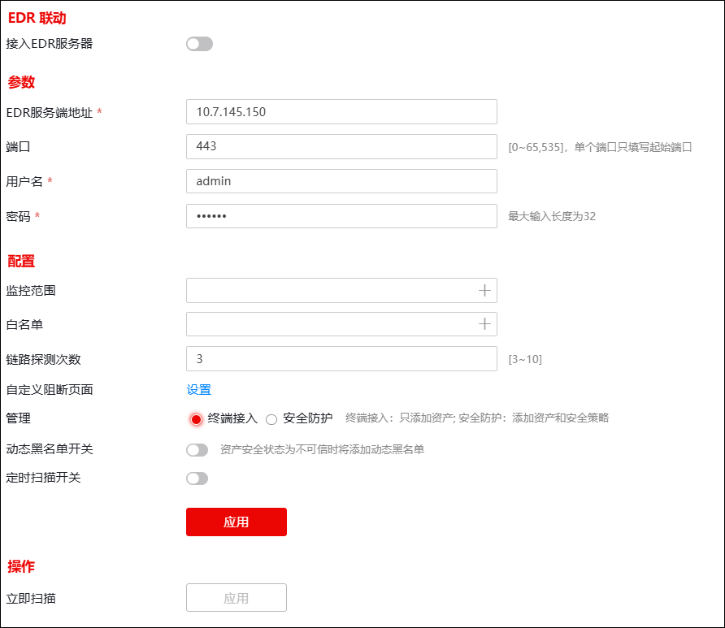

NGFW通过与EDR服务器联动，可以获取EDR服务器上的相关资产信息（添加到资产列表中）。在正常连接状态下，当EDR服务器检测到资产信息发生增、删、改时，都会发送更新信息到NGFW，NGFW从而进行资产信息的在线更新。资产信息的变化主要是指资产名称、IP地址、MAC地址、资产类型、物理地址、资产状态、安全状态等发生变化。
此外，NGFW还可以下发相应的策略从而达到对EDR终端的管控。防火墙可配置的EDR终端管控策略有：监控范围、白名单、动态黑名单、定时扫描等。配置EDR联动功能的操作步骤如下：
| 步骤1 | 选择 ，界面如下图所示。 |

各项参数的具体说明如下表所示。
参数 |
说明 |
|
|---|---|---|
EDR联动 |
接入EDR服务器 |
联动参数配置完成后，开启接入EDR服务器开关，防火墙主动向EDR服务器发起https连接。当防火墙与EDR服务器之间的通讯正常，账号、密码正确时连接才能建立成功。连接建立成功后，防火墙主动获取EDR服务器上的资产信息，一次性获取EDR服务器上的所有资产。 |
参数 |
配置EDR与NGFW联动的网络认证参数。 |
|
EDR服务端地址 |
输入EDR服务器的IP地址，支持IPv4和IPv6地址。 |
|
端口 |
输入EDR服务器的管理端口号。默认为“443”，如果EDR服务器管理端口号修改为非“443”，这里需要配置对应的端口号。 |
|
用户名 |
输入登录EDR服务器的用户名。 |
|
密码 |
输入登录EDR服务器的密码。 |
|
配置 |
配置防火墙对从EDR服务器获取的资产的管控策略。 |
|
监控范围 |
支持添加地址对象（主机、范围、子网）和地址组对象，最多添加128个地址对象。 报文的目的IP地址没有命中白名单，NGFW继续将报文的源IP地址与“监控范围”进行匹配。 Ø当报文的源IP地址没有命中“监控范围”，NGFW直接放行该报文。 Ø当报文的源IP地址命中了“监控范围”，仅当发送该报文的资产在资产列表且状态为在线时，NGFW才会放行该报文，其他情况均阻断。 说明： “监控范围”可满足需求：禁止没有安装EDR客户端的终端或者虽然安装了EDR客户端但当前EDR客户端处于离线状态的终端通过防火墙访问外网。 |
|
白名单 |
支持添加地址对象（主机、范围、子网）和地址组对象，最多添加128个地址对象。 如果报文的目的IP地址命中“白名单”，NGFW直接放行该报文；否则，NGFW继续将报文的源IP地址与“监控范围”进行匹配，根据“监控范围”匹配逻辑处理报文。 |
|
链路探测次数 |
保持防火墙与EDR服务器的连通性检测。单位：次；取值范围：3-10；默认值：3。如果探测次数到达本参数设置值（间隔20秒发送一次），探测结果仍为失败，则判定防火墙与EDR服务器连接异常。 |
|
自定义阻断页面 |
报文的源IP地址命中“监控范围”，且发送该报文的资产在NGFW资产列表中不存在或者资产离线时，如果该报文为HTTP协议报文，NGFW阻断报文并向发送该报文的资产返回阻断页面；如果该报文为非HTTP协议的报文，NGFW直接阻断报文不返回阻断页面。 点击“设置”可修改阻断页面的显示内容。 说明： 必须开启TCP重置开关，NGFW才会返回阻断页面。 |
|
管理 |
设置NGFW接入EDR服务器后，NGFW对资产的处置措施。可选项：终端接入、安全防护。 Ø终端接入：表示只添加资产到 资产列表 中。 Ø安全防护：表示除了添加资产外，为资产自动生成访问控制策略（默认动作为放行）。 |
|
动态黑名单开关 |
开启EDR联动动态黑名单开关，NGFW才会将不可信的资产自动加入动态黑名单中（资产可信/不可信状态由EDR服务器上报给NGFW），此功能开关默认关闭。加入动态黑名单中的资产通过防火墙访问资源时，会触发黑名单从而导致防火墙丢弃该资产发送的报文。 说明： 1）产生的动态黑名单对源IP进行控制，不影响其他设备主机访问加入黑名单中的资产。 2）加入动态黑名单的情况：手动接入资产的安全状态为不可信时；EDR服务器上报的新的资产安全状态为不可信时；当资产的安全状态由可信变为不可信时。 3）删除动态黑名单的情况：当资产由不可信变为可信时；当EDR断开，连接失败时。 |
|
定时扫描开关 |
启用定时扫描后，EDR服务器会自动创建对应的定时扫描任务。 |
|
扫描时间 |
自动定时（每日/每周/每月）请求EDR服务器下发EDR客户端扫描任务。 |
|
操作 |
立即扫描 |
一键立即请求EDR服务器下发EDR客户端扫描任务。 |
| 步骤2 | “参数”和“配置”区域的参数配置完成后，点击【应用】保存配置。 |
| 步骤3 | 启用“接入EDR服务器”开关，开启EDR联动功能。EDR联动成功后，点击“操作”区域的【立即扫描】可立即请求EDR服务器下发EDR客户端扫描任务。 |